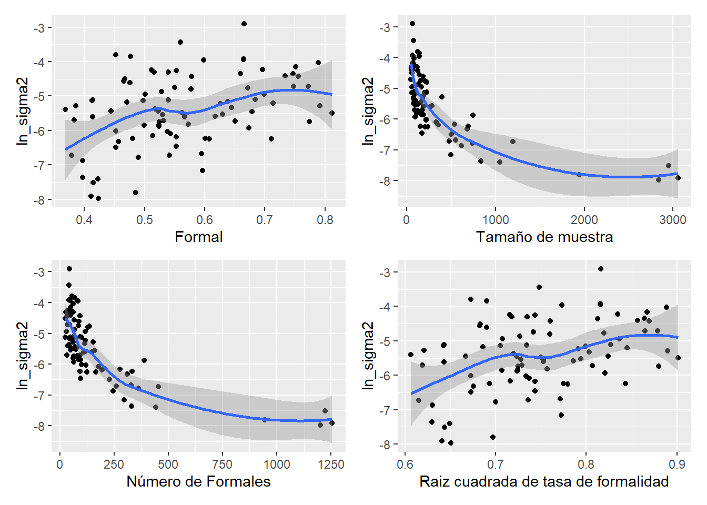
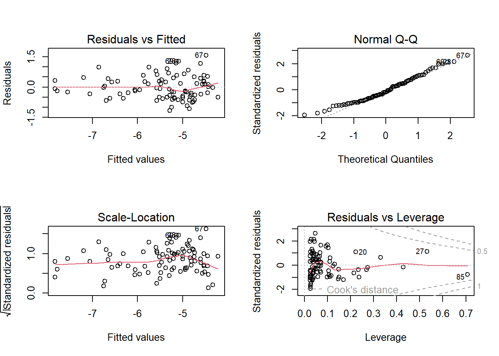
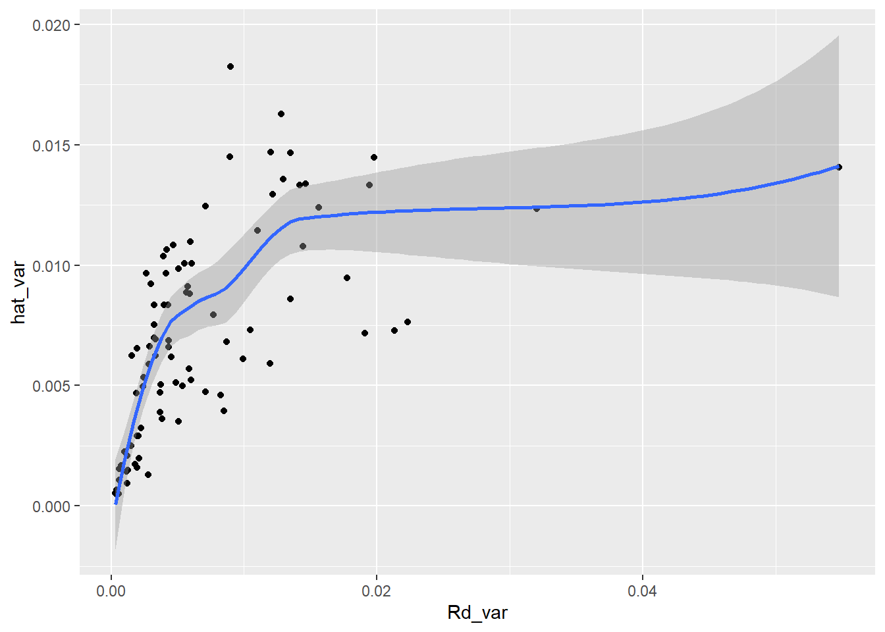
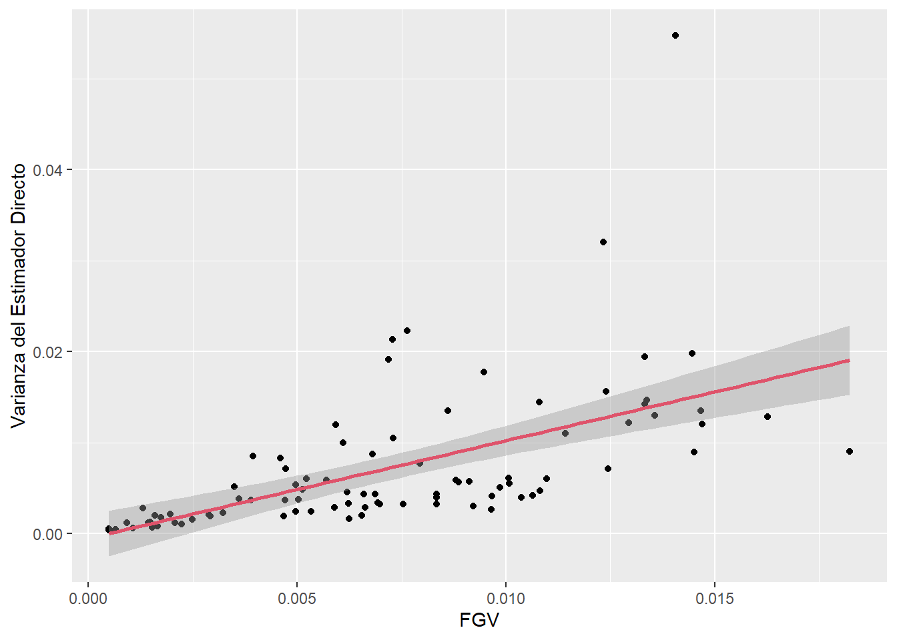
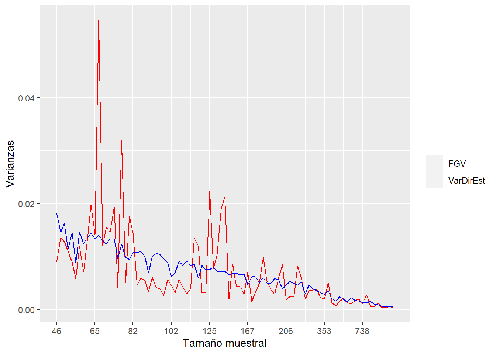

library(ggplot2)
library(dplyr)
library(patchwork)
select <- dplyr::select
id_dominio <- "id_dominio"Estimación de la tasa de informalidad en República Dominicana empleando modelos de área con transformación arcoseno
Función generalizada de varianza
Introducción Uno de los insumos más importantes en el modelo de áreas es la varianza del estimador directo, a nivel de dominio, la cual no puede calcularse de ningún modo. En correspondencia, este valor debe estimarse desde los datos recolectados en cada dominio. Sin embargo, en dominios en las que se cuenta con un tamaño de muestra muy pequeño, estas estimaciones no tendrán un buen comportamiento. Por ende, es muy útil utilizar un modelo de suavizamiento de las varianzas para eliminar el ruido y la volatilidad de estas estimaciones y extraer la verdadera señal del proceso
Hidiroglou (2019) afirma que \(E_{mp}\left(\hat{\theta}^{dir}_d\right)=\boldsymbol{x}_{d}\boldsymbol{\beta}\) y \(V_{mp}\left(\hat{\theta}^{dir}_d\right)=\sigma_{u}^2+\tilde{\psi}^2_{d}\), en donde el subíndice \(mp\) hace referencia a la inferencia doble que se debe tener en cuenta en este tipo de ajustes y define la medida de probabilidad conjunta entre el modelo y el diseño de muestreo.
\(m\) hace referencia a la medida de probabilidad inducida por el modelamiento y la inclusión de las covariables auxiliares (\(\boldsymbol{x}_{d}\)).
\(p\) hacer referencia a la medida de probabilidad inducida por el diseño de muestreo complejo que induce las estimaciones directas.
La solución que acá se plantea se conoce con el nombre de Función Generalizada de Varianza, la cual consiste en ajustar un modelo log-lineal a la varianza directa estimada. Partiendo del hecho de que se tiene acceso a un estimador insesgado de \(\psi^2\), denotado por \(\hat{\psi}^2\) se tiene que: \[ E_{mp}\left(\hat{\psi}_{d}^{2}\right)=E_{m}\left(E_{p}\left(\psi_{d}^{2}\right)\right)=E_{m}\left(\psi_{d}^{2}\right)=\tilde{\psi}_{d}^{2} \]
La anterior igualdad puede interpretarse como que un estimador insesgado y simple de \(\tilde{\psi}_{d}^{2}\) puede ser \(\hat{\psi}_{d}^{2}\). Sin embargo, este estimador de muestreo es inestable cuando el tamaño de muestra es pequeño, que es justo el paradigma dominante en la estimación de áreas pequeñas. Rivest and Belmonte (2000) consideran modelos de suavizamiento para la estimación de las varianzas directas definidos de la siguiente manera:
\[ \log\left(\hat{\psi}_{d}^{2}\right)=\boldsymbol{z}_{d}^{t}\boldsymbol{\alpha}+\boldsymbol{\varepsilon}_{d} \]
En donde \(\boldsymbol{z}_{d}\) es un vector de covariables explicativas que son funciones de \(\boldsymbol{x}_{d}\), \(\boldsymbol{\alpha}\) es un vector de parámetros que deben ser estimados, \(\boldsymbol{\varepsilon}_{d}\) son errores aleatorios con media cero y varianza constante, que se asumen idénticamente distribuidos condicionalmente sobre \(\boldsymbol{z}_{d}\). Del anterior modelo, la estimación suavizada de la varianza de muestreo está dada por: \[ \tilde{\psi}_{d}^{2}=E_{mp}\left(\psi_{d}^{2}\right)=\exp\left(\boldsymbol{z}_{d}^{t}\boldsymbol{\alpha}\right)\times\Delta \]
En donde, \(E_{mp}\left(\varepsilon_{d}\right)=\Delta\). No hay necesidad de especificar una distribución paramétrica para los errores de este modelo. Al utilizar el método de los momentos, se tiene el siguiente estimador insesgado para \(\Delta\): \[ \hat{\Delta}=\frac{\sum_{d=1}^{D}\hat{\psi}_{d}^{2}}{\sum_{d=1}^{D}\exp\left(\boldsymbol{z}_{d}^{t}\boldsymbol{\alpha}\right)} \]
De la misma forma, al utilizar los procedimientos estándar en una regresión lineal, la estimación del coeficiente de parámetros de regresión está dada por la siguiente expresión:
\[ \hat{\boldsymbol{\alpha}}=\left(\sum_{d=1}^{D}\boldsymbol{z}_{d}\boldsymbol{z}_{d}^{t}\right)^{-1}\sum_{d=1}^{D}\boldsymbol{z}_{d}\log\left(\hat{\psi}_{d}^{2}\right) \]
Por último, el estimador suavizado de la varianza muestral está definido por:
\[ \hat{\tilde{\psi}}_{d}^{2}=\exp\left(\boldsymbol{z}_{d}^{t}\hat{\boldsymbol{\alpha}}\right)\hat{\Delta} \]
Lectura de librerías
En cada etapa del proceso, es común comenzar cargando las librerías necesarias. Para ajustar el modelo log-lineal, se utilizó el paquete base de R. Además, se generaron gráficos para el análisis exploratorio de los datos, utilizando las librerías ggplot2 y patchwork. Para el procesamiento de la base, se implementó el paquete dplyr y se definió la función select() como medida de prevención de conflictos entre funciones de otros paquetes. Además, se estableció la variable id_dominio como parte del proceso de estandarización.
Lectura del la base de datos
El código presentado es utilizado para procesar una base de datos de una encuesta en formato .Rds. Primero se carga la base de datos y se agrega un cero al inicio de la variable UPM con la funciónstr_pad(). Posteriormente, se crea un objeto n_upm que contiene el número de Unidades Primarias de Muestreo (UPM) por dominio, esto se logra a través de la función distinct() para seleccionar las columnas que cumplen ciertas condiciones y la función group_by() para agrupar los datos por dominio. Finalmente, se utiliza tally() para contar el número de UPM por dominio y se presenta la tabla resultante con la funcióntba().
encuestaDOM <- readRDS("../Data/encuestaDOM.Rds") %>%
mutate(
upm = str_pad(string = upm,width = 9,pad = "0"))
n_upm <- encuestaDOM %>% distinct(id_dominio, upm) %>%
group_by(id_dominio) %>% tally(name = "n_upm",sort = TRUE)
tba(head(n_upm,10))| id_dominio | n_upm |
|---|---|
| 0101 | 127 |
| 3201 | 109 |
| 2501 | 87 |
| 3203 | 59 |
| 3202 | 42 |
| 1101 | 38 |
| 3206 | 32 |
| 0901 | 20 |
| 1301 | 20 |
| 2101 | 20 |
Lectura de las estimaciones directas del indicador
El código está realizando una unión completa (full join) de dos bases de datos indicador_dom y n_upm, usando la variable id_dominio como clave. La unión completa asegura que se conserven todas las filas de ambas bases de datos, incluso aquellas que no tienen coincidencias en la otra base de datos. Después de la unión, la variable n_upm (que indica el número de UPMs por dominio) se añade a la base de datos indicador_dom.
indicador_dom <- readRDS('../Data/indicador_dom.Rds')
indicador_dom <- full_join(indicador_dom, n_upm, by = id_dominio)Se filtran los dominios que posean una varianza estimada mayor que cero, un deff mayor que 1 y 2 o más UPMs
indicador_dom1 <- indicador_dom %>%
filter(Rd_var>0 & Rd_deff>=1 & n_upm >= 2) para los dominios que superan estas condiciones se realiza la transformación \(\log(\hat{\sigma}^2_d)\), además se realiza la selección de las columnas identificador del municipio (id_dominio), la estimación directa del indicador (Rd), El número de personas en el dominio (n) y la varianza estimada del para la estimación directa Rd_var,siendo esta la que transforma mediante la función log().
baseFGV <- indicador_dom1 %>%
dplyr::select(id_dominio , Rd, n, Rd_var) %>%
mutate(ln_sigma2 = log(Rd_var))Gráficas exploratorias
El código muestra la creación de cuatro gráficos usando la librería ggplot2 y el uso de los datos baseFGV. Estos gráficos tienen como objetivo explorar la relación entre el logaritmo de la varianza y diferentes transformaciones de la n y Rd.
El primer gráfico (p1) representa la relación entre la estimación directa y el logaritmo de la varianza. El segundo gráfico (p2) representa la relación entre el tamaño de muestra y el logaritmo de la varianza. El tercer gráfico (p3) representa la relación entre \(n_d \times Rd\) y el logaritmo de la varianza. Finalmente, el cuarto gráfico (p4) representa la relación entre la raíz cuadrada de la estimación directa y el logaritmo de la varianza.
p1 <- ggplot(baseFGV, aes(x = Rd, y = ln_sigma2)) +
geom_point() +
geom_smooth(method = "loess") +
xlab("Formal")
p2 <- ggplot(baseFGV, aes(x = n, y = ln_sigma2)) +
geom_point() +
geom_smooth(method = "loess") +
xlab("Tamaño de muestra")
p3 <- ggplot(baseFGV,
aes(x = Rd * n, y = ln_sigma2)) +
geom_point() +
geom_smooth(method = "loess") +
xlab("Número de Formales")
p4 <- ggplot(baseFGV,
aes(x = sqrt(Rd), y = ln_sigma2)) +
geom_point() +
geom_smooth(method = "loess") +
xlab("Raiz cuadrada de tasa de formalidad")
(p1 | p2) / (p3 | p4)
rm('p1','p2','p3','p4')Ajustando el modelo log-lineal de la varianza
El código ajusta un modelo de regresión lineal múltiple (utilizando la función lm()), donde ln_sigma2 es la variable respuesta y las variables predictoras son Rd, n, y varias transformaciones de éstas. El objetivo de este modelo es estimar la función generalizada de varianza (FGV) para los dominios observados.
library(gtsummary)
FGV1 <- lm(ln_sigma2 ~ 1 + Rd +
n + I(n ^ 2) + I(Rd * n) +
I(sqrt(Rd)) + I(sqrt(n)) +
I(sqrt(Rd * n)) ,
data = baseFGV)
tbl_regression(FGV1) %>%
add_glance_table(include = c(r.squared, adj.r.squared))| Characteristic | Beta | 95% CI1 | p-value |
|---|---|---|---|
| Rd | -22 | -50, 5.8 | 0.12 |
| n | -0.01 | -0.03, 0.01 | 0.3 |
| I(n^2) | 0.00 | 0.00, 0.00 | 0.5 |
| I(Rd * n) | 0.02 | -0.01, 0.05 | 0.2 |
| I(sqrt(Rd)) | 45 | -4.7, 94 | 0.076 |
| I(sqrt(n)) | 0.87 | -0.48, 2.2 | 0.2 |
| I(sqrt(Rd * n)) | -1.4 | -3.1, 0.34 | 0.11 |
| R² | 0.683 | ||
| Adjusted R² | 0.656 | ||
| 1 CI = Confidence Interval | |||
Después de tener la estimación del modelo se debe obtener el valor de la constante \(\Delta\) para lo cual se usa el siguiente código.
delta.hat = sum(baseFGV$Rd_var) / sum(exp(fitted.values(FGV1)))De donde se obtiene que \(\Delta = 1.2364741\). Final es posible obtener la varianza suavizada ejecutando el siguiente comando.
baseFGV <-
baseFGV %>% mutate(hat_var = delta.hat * exp(fitted.values(FGV1)))Validaciones sobre el modelo
par(mfrow = c(2, 2))
plot(FGV1)
varianza suavizada Vs varianza estimada
ggplot(baseFGV,
aes(x = Rd_var, y = hat_var)) +
geom_point() +
geom_smooth(method = "loess")
Este código está realizando una Consolidación de los dominios observados y no observados para lo cual hace una unión izquierda (left_join()) entre: indicador_dom y baseFGV de la cual selecciona las columnas de id_dominio y hat_var. El argumento by = id_dominio especifica que la unión debe realizarse mediante la columna id_dominio.
Luego, se utiliza la función mutate() para crear dos nuevas variables. La primera variable Rd_var se asigna el valor de Rd_var de baseFGV si hat_var no es un valor nulo (NA), de lo contrario se le asigna un valor NA_real_ (NA pero de tipo numérico). De manera similar, se crea la variable Rd_deff con el valor de Rd_deff de baseFGV si hat_var no es nulo, de lo contrario se le asigna un valor NA_real_.
base_sae <- left_join(indicador_dom,
baseFGV %>% select(id_dominio, hat_var),
by = id_dominio) %>%
mutate(
Rd_var = ifelse(is.na(hat_var), NA_real_, Rd_var),
Rd_deff = ifelse(is.na(hat_var), NA_real_, Rd_deff)
)Ahora, se debe estimar deff_FGV y n_eff_FGV a parir de la varianza suvizada (hat_var).
base_FH <- base_sae %>%
mutate(
Rd_deff = ifelse(is.nan(Rd_deff), 1, Rd_deff),
deff_FGV = ifelse(Rd_var == 0 ,
1,
hat_var / (Rd_var / Rd_deff) #Fórmula del nuevo DEFF
),
# Criterio MDS para regularizar el DeffFGV
deff_FGV = ifelse(deff_FGV <= 1, NA_real_, deff_FGV), #Deff estimado
n_eff_FGV = n / deff_FGV, #Número efectivo de personas encuestadas
# Si no se estimó varianza para ese municipio, también excluir
# la estimación directa de este municipio, esto es relevante para el modelo FH
hat_var = ifelse(deff_FGV <= 1, NA_real_, hat_var),
Rd = ifelse(is.na(hat_var), NA_real_, Rd)
)
tba(head(base_FH %>% select(id_dominio,n,n_upm,Rd, Rd_var,hat_var:n_eff_FGV), 10))| id_dominio | n | n_upm | Rd | Rd_var | hat_var | deff_FGV | n_eff_FGV |
|---|---|---|---|---|---|---|---|
| 0101 | 2951 | 127 | 0.4147 | 0.0005 | 0.0005 | 5.9860 | 492.9810 |
| 0201 | 221 | 7 | 0.4526 | 0.0024 | 0.0053 | 4.7576 | 46.4517 |
| 0202 | 86 | 2 | NA | NA | NA | NA | NA |
| 0203 | 86 | 2 | 0.7138 | 0.0055 | 0.0101 | 4.2227 | 20.3661 |
| 0204 | 51 | 1 | NA | NA | NA | NA | NA |
| 0205 | 34 | 1 | NA | NA | NA | NA | NA |
| 0206 | 65 | 2 | 0.5527 | 0.0142 | 0.0133 | 3.4692 | 18.7366 |
| 0208 | 74 | 2 | 0.8122 | 0.0041 | 0.0097 | 4.6595 | 15.8814 |
| 0210 | 16 | 1 | NA | NA | NA | NA | NA |
| 0301 | 264 | 6 | 0.5668 | 0.0037 | 0.0039 | 4.2461 | 62.1742 |
El código anterior realiza algunas transformaciones y ajustes sobre la base de datos base_sae para obtener la base de datos base_FH. Primero, se verifica que el valor Rd_deff no sea NaN, en cuyo caso se establece en 1. A continuación, se calcula el nuevo valor del deff_FGV para cada municipio mediante la fórmula que incluye el valor de hat_var (la varianza estimada a través del modelo FGV) y los valores de Rd_var y Rd_deff (la varianza de diseño y el DEFF estimado). Si Rd_var es 0, entonces se establece deff_FGV en 1.
Luego, se utiliza el criterio MDS (Minimum Detectable Size) para regularizar el valor de deff_FGV, estableciendo en NA aquellos valores que son menores o iguales a 1. A partir de deff_FGV, se calcula el número efectivo de personas encuestadas n_eff_FGV.
Finalmente, se excluyen aquellos municipios para los cuales no se pudo estimar la varianza a través del modelo FGV, estableciendo en NA los valores de hat_var y Rd. El resultado es una base de datos que contiene información relevante para la construcción del modelo FH.
Otras validaciones sobre el resultado del modelo.
Continuando con el proceso de validación se construye el siguiente gráfico de dispersión con la variable de la varianza del estimador directo en el eje y y la varianza FGV en el eje x, para los municipios que tienen valores válidos para ambas variables. La línea de regresión lineal se ajusta a los puntos usando el método de mínimos cuadrados.
La visualización del gráfico permite evaluar si la FGV está capturando adecuadamente la variabilidad de la variable de interés (en este caso, la variable de varianza del estimador directo). Si la FGV captura la variabilidad, se espera que los puntos estén relativamente cerca de la línea de regresión, lo que indicaría que la FGV explica una gran parte de la variabilidad de la varianza del estimador directo. Por otro lado, si la FGV no captura la variabilidad, los puntos estarán más dispersos y alejados de la línea de regresión.
nDom <- sum(!is.na(base_FH$hat_var))
temp_FH <- base_FH %>% filter(!is.na(hat_var))
ggplot(temp_FH %>% arrange(n), aes(x = hat_var, y = Rd_var)) +
geom_point() +
geom_smooth(method = "lm", col = 2) +
labs(x = "FGV", y = "VaRdirEst") +
ylab("Varianza del Estimador Directo")
Ahora, se realiza la comparación de la variabilidad de la varianza del estimador directo frente a la varianza suavizada a medida que el tamaño de muestra aumenta. El eje x representa el tamaño de la muestra y el eje y representa las varianzas. La línea azul representa la varianza FGV, mientras que la línea roja representa la varianza del estimador directo. En el gráfica es posible notar que la varianza FGV tiene una menos volatilidad que la varianza directa.
ggplot(temp_FH %>%
arrange(n), aes(x = 1:nDom)) +
geom_line(aes(y = Rd_var, color = "VarDirEst")) +
geom_line(aes(y = hat_var, color = "FGV")) +
labs(y = "Varianzas", x = "Tamaño muestral", color = " ") +
scale_x_continuous(breaks = seq(1, nDom, by = 10),
labels = temp_FH$n[order(temp_FH$n)][seq(1, nDom, by = 10)]) +
scale_color_manual(values = c("FGV" = "Blue", "VarDirEst" = "Red"))
Siguiendo en la misma linea se realiza la comparación del n efectivo directo (n_eff_DIR) y el n efectivo FGV (n_eff_DIR). El código que se muestra acontinuación produce un gráfico que compara el tamaño de muestra efectivo obtenido a través de la estimación del DEFF con el tamaño de muestra directo. En el eje x se muestra el tamaño de muestra directo (n) y en el eje y se muestra el tamaño de muestra efectivo, calculado a través de la fórmula n/DEFF para la estimación directa (rojo) y para la FGV (azul).
Se puede observar que, en general, el tamaño de muestra efectivo estimado a través de la FGV es menos variable que el estimado a través de la estimación directa, lo que indica que la FGV reduce la varianza de la estimación. Además, se puede observar que para algunos dominios el tamaño de muestra efectivo estimado a través de la FGV es menor que el tamaño de muestra directo, lo que puede deberse a que la estimación de la varianza a través de la FGV. En general, este gráfico es útil para comparar la eficiencia de la estimación a través de la FGV y la estimación directa para cada dominio.
ggplot(temp_FH %>%
arrange(n), aes(x = 1:nDom)) +
geom_line(aes(y = n / Rd_deff, color = "n_eff_DIR")) +
geom_line(aes(y = n_eff_FGV, color = "n_eff_FGV")) +
labs(y = "Tamaño de muestra efectivo",
x = "Tamaño muestral", color = " ") +
scale_x_continuous(breaks = seq(1, nDom, by = 10),
labels = temp_FH$n[order(temp_FH$n)][seq(1, nDom, by = 10)]) +
scale_color_manual(values = c("n_eff_FGV" = "Blue", "n_eff_DIR" = "red"))
Guardando el archivo
saveRDS(object = base_FH, "../Data/base_FH.Rds")